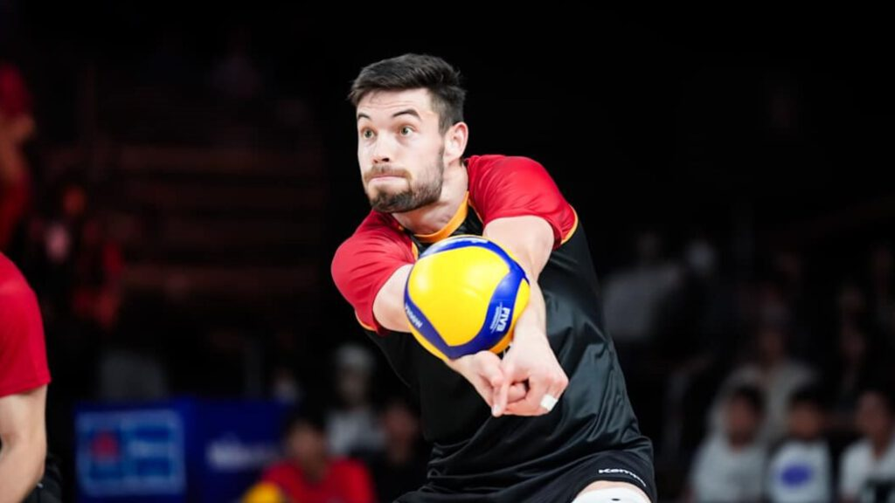
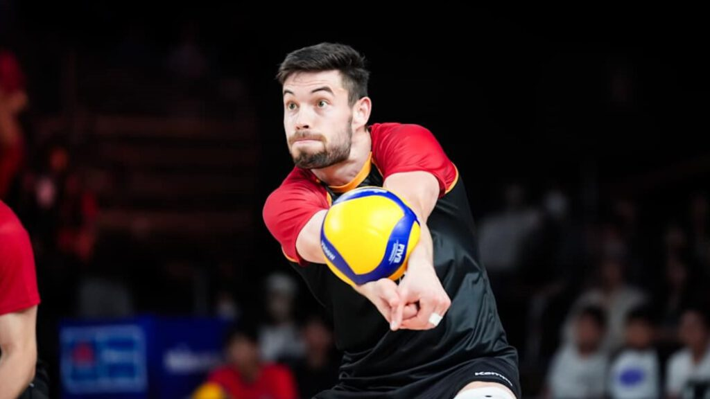

Angriff
Ziel der Angriffstechnik ist es so viel Höhe und Kraft wie möglich aufzubringen. Der Angriff beginnt mit dem Anlauf. Der Anlauf besteht aus 3-4 Schritten, wobei der letzte Schritt ein Absprung mit beiden Beinen ist. Der Absprung sollte so nah wie möglich am Netz erfolgen, um eine gute Winkelposition zum Block zu haben. Der Schlagarm wird dabei weit nach hinten geführt, um eine große Hebelwirkung zu erzielen. Der Ball wird mit der offenen Hand getroffen, wobei das Handgelenk schnell nach vorne schnellt, um dem Ball Drall zu verleihen. Der Körper sollte sich während des Schlages nach vorne neigen, um die Kraft optimal auf den Ball zu übertragen.
Annahme
Die Annahme ist der erste entscheidende Schritt nach dem Aufschlag des Gegners und bildet die Grundlage für einen erfolgreichen Spielaufbau. Ziel der Annahme ist es, den Ball kontrolliert in Richtung Zuspieler zu bringen, sodass ein geordneter Angriff möglich ist. Die Spieler positionieren sich dabei in einer stabilen Grundhaltung, die Beine leicht gebeugt, das Gewicht nach vorne verlagert, um schnell reagieren zu können. Die Hände werden zu einer festen Plattform zusammengedrückt, die Arme leicht nach vorne gestreckt, um den Ball sauber aufnehmen zu können. Während der Ballkontakt erfolgt, bleibt der Blick immer auf den Ball gerichtet, um dessen Geschwindigkeit und Flugbahn genau einschätzen zu können.
 

Zuspiel
Das Zuspiel ist der zentrale Aufbau des Angriffs und verbindet Annahme und Angriff miteinander. Ziel des Zuspiels ist es, den Ball präzise zu einem Angreifer zu bringen, sodass ein gezielter und kraftvoller Angriff möglich ist. Der Zuspieler positioniert sich dabei optimal zum Ball, beugt leicht die Knie und hält die Hände bereit, um eine saubere Kontaktfläche zu bilden. Beim Pass werden die Finger gespreizt, die Handgelenke stabil, und der Ball wird kontrolliert nach oben und in die gewünschte Richtung gespielt. Dabei achtet der Zuspieler auf die Position der Angreifer und deren Laufwege, um die bestmögliche Angriffsoption auszuwählen. Ein gut platziertes Zuspiel ermöglicht schnelle Kombinationen und erschwert der gegnerischen Abwehr, den Angriff zu blocken.

Block
Der Blockspieler positioniert sich schnell und präzise vor dem Angreifer, springt mit gestreckten Armen und gespreizten Fingern hoch und versucht, eine möglichst große Fläche zu bilden, um den Ball effektiv abzublocken. Dabei ist nicht nur die richtige Technik entscheidend, sondern auch das Timing: Der Block muss im perfekten Moment erfolgen, um den Ball optimal zu treffen. Kommunikation mit den Mitspielern und das Lesen der gegnerischen Angriffsbewegung sind essenziell, um die Position des Blocks anzupassen und gezielt Druck auszuüben. Ein gut koordinierter Doppel- oder Dreierblock kann den Angreifer verunsichern und die Erfolgschancen des gegnerischen Teams deutlich senken.